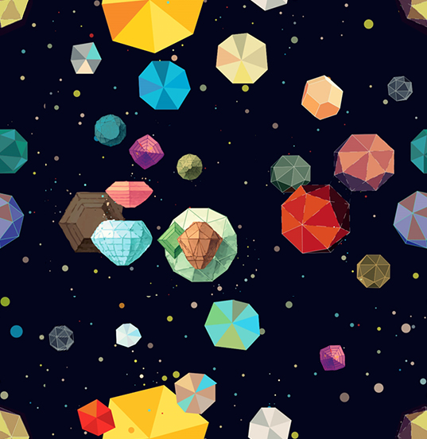

<!-- Declarações -->
<link rel="stylesheet" href="https://maxcdn.bootstrapcdn.com/bootstrap/4.0.0/css/bootstrap.min.css">
<link rel="stylesheet" href="css/styles.css">
<script src="scripts.js"></script>
<!-- FIM Declarações -->


<main role="main" style="background-image: url('img/funky-lines.png');padding:2%">
  <section id="sobre" class="card text-center">
      <div class="container">
        <h2>Sobre mim</h2>
        <div>
                 
        </div>
        <hr>
        <div class="bio text-muted">
          <p >
            Se eu tivesse tido um título dado pelos meus pais, seria<i> o menino do computador</i>. Existem coisas na vida das quais a gente corre, mas que insistem em nos seguir, e quando nos encontram, ocorre uma colisão espetacular na qual a gente só consegue admirar o motivo de ter demorado tanto. De certa forma, essa é minha história com a computação.
          </p>
          <p>
            A minha formação acadêmica, devido à minha aversão inicial à matemática, me levou pra área da saúde. Eu sou formado farmacêutico e especializado em farmácia clínica. Durante a minha especialização, me encontrei pensando diversas vezes em maneiras de tornar meu trabalho menos repetitivo e mecânico: Eu cuidava <i>(e ainda cuido)</i> de pessoas e detestava perder grande parte do meu dia em tabelas e formulários sem fim.
          </p>
          <p>
            Foi aí que a minha fuga da matemática e da computação chegou ao fim. Eu comecei a mergulhar em maneiras de automatizar meu trabalho e eventualmente acabei aprendendo a programar! Descobri loops, ifs e elses que <i><strong>que me levaram a classes, objetos, estruturas de dados, padrões de projetos, sistemas e uma nova paixão: A computação.</strong></i> Hoje em dia curso Sistemas de Computação, pela UFF.
          </p>
          <p>
            Esta página é só um pequeno compilado das coisas que eu tenho feito e que frequentemente envolvem minhas duas paixões, cuidar de pessoas e usar a computação para automatizar tarefas maçantes. Hoje em dia, meus maiores interesses estão em data science em saúde, compiladores, arquitetura de software e aprendizado de máquina
          </p>
        </div>
        <hr>
        <div>
          EXTRAS
        </div>
      </div>
    </section>
  
</main>